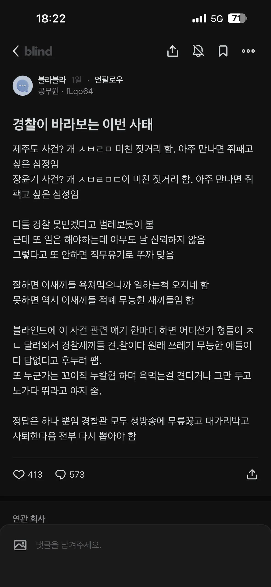

여경을 더 뽑으면 해결될거 같다 여경 더 뽑자
어차피 무슨직업이든 욕먹음 ㅋㅋㅋ
경찰 군인 의사 변호사 정치인 다 욕먹움 걍 디폴트라 생각하고 알빠노해야지
그런거에 혐오하고 무관심하게 되면 남미,아프리카 같은 국가가 되는거
짜증나고 귀찮더라도 계속 감시하고 욕해야됨
이제 전수조사 한다 하면서 멀쩡히 일하던 사람들은 더 피곤해질텐데
ㅋㅋ 저 문제에대한 해결책이라고 할 수 있는 순환보직에대해 반대시위하는건 쏙 빼고 얘기하네.
극히 일부가 잘못한게 아니라 피해자 코스프레 할 수 없는건 일부러 빼놓고 프레이밍하는거 봐라
강남경찰서로 권력의 하수인인거 보여준 경찰이 실질적 치안 실무도 안 하면 당연히 병신취급 받는 거지
그렇다고 국민이 그걸 욕할 자격이 있느냐고 하면 하 씨발 검찰 수사권 얘기로 가면 정치얘기네
경찰은 원래.......
한번도 바뀐적이 없었는데......
명예와 사명감으로 일하는 사람들도 많지.. 근데 건달과 경찰은 종이한장 차이라고....
요새는 죄다 b2b로 뽀찌를...
열심히 하던 사람들은 억울하지
경찰들도 검사 수사권 유지 여론이 대다수인데 (존나 머리아파서 검사가 하는게 맞지 시발)
정치권 즈그들 집권용으로 이용하고 일선 수사부서 사람들 뒤져나가는건 생각도 안하고
수사부서 근무 친구 두명, 한명 이직하고 한명 그만두고 소방준비중
우리 형님도 경감인데 수사권을 왜 가져와서
일을 더 만들지 하는 말을 하더라 ...
웬일로 맞는말을하냐
순환보직도 하자고 해라
이미지 안좋은거 알고 들어왔고 난 내 직업이 자랑스러운데
들어오자마자 사수로 부터 들은 소방가지 왜 경찰했냐 같은 말은 바로 힘빠지게 만들더라. 난 그래도 다시 태어나도 경찰할래.
일하면서 시민들에게 듣는 고맙다는 말이 삶의 원동력임
어차피 욕하는 놈들 80%는 전과자 놈들이라고 생각함
현실에선 그래도 식당가면 경찰이라고 서비스 주고 애들이 좋아해주고 인사해주는 사람 많이 봐서 괜찮은거 같음
몇년차임
5년 밖에 안됐어요
화이팅해라
감사합니다
소방가지 왜 경찰왔냐
기어 노조원이세요?
그 말은 소방관 했으면 어딜 가든 다 들을 텐데..
고맙다
경찰들은 바로 근접에 피곤한 민원 고생많이하더라
근데 이런 추세가 더 강해질거같긴함. 박봉에 격무에 시달린다고 생각하는 공무원들 많을텐데 사회는 누칼협 꼬이직으로 대하니 하방이 점점 낮아질듯. 아무래도 이전보다 질적저하, 사기저하가 아닐지. 어느정도 영향줫다고봄
누구나 쉽게 된다면 질적저하는 일어날수밖에 없지
열심히 일하는게 기본아닌가? 욕먹으니까 일하네 이런 마인드는 도대체 어디서 나오는거니..
경찰 괜히됐네 ㅠㅠ 힝 ㅠㅠ
공공신뢰도가 박살나고 있네
병역 안전 선거 치안 그다음은 뭘까? 소방?
기술직이 먼저지
미달나는거 몇년 지속됏음
앞으로 도로 파이고 시설물 하자고 한 세월 걸릴거임
누칼협해서 다 진짜 꼬이직햇으니 대가를 받아야지 뭐 ㅋㅋ
소방만은 마지막까지 남앗으면 좋겠다
알빠노하고 할 일 하면 되는거임 물론 신뢰가 떨어지면 사람들 협조가 어려워지겠지만 법으로 강제할 수 있는 부분이 있다면 협조던 뭐던 공권력 행사하고 밀고 나가야지
경찰이 구조적으로 욕먹을 수밖에 없는게 상대방에게 이로움을 주는 직업이 아닌 강제하고 통제하는 일을 하기 때문에 욕을 먹을 수밖에 없음 경찰 신뢰도 높은 나라가 유럽 국가 말고는 없어
그리고 대한민국에서 벌금형 이상 전과자가 1200만명에 달함 형이 실제로 확정된 사람만 이정도고 벌금형 보다 형벌이 낮은 통계에도 잡히지 않는 선고유예나 기소유예자까지 합치면 진짜 어마어마하게 많은 사람들이 범죄자라는건데 경찰 이미지가 좋은게 불가능하지 생각해봐 대한민국 성인 30%가 전과자인데 경찰 이미지가 좋을 수가 있겠냐고 통계적으로 매년 70만명 이상이 벌금형 이상 처벌을 받고있음(신호위반,무단횡단 이런 과태료,범칙금이 아님 실제로 형사,검사,판사 만나서 재판까지 받는거)
물론 대부분은 생활형 범죄(폭행, 음주운전, 절도, 소액사기) 이런게 대부분이지만 죄질이 어찌됐건 경찰 만나서 털리고 판검사 만나서 털리는건 매한가지라 시민들의 사법체계에 대한 인식이 좋기가 어렵지 공식적으로 집계가 된 통계는 아니지만 징역, 즉 교도소까지 들어갔다 온 사람들이 누적 100만명 정도 된다는 역산치가 있을 정도임
그냥 내가 잘 하면 됨 다른 방법이 없음
나는 개 키우는데 견주들 욕하는 거 볼때마다 그냥 내가 잘 해야지 생각함
이게 다 무리한 검수완박 때문에 경찰이 욕 처먹는거지

ㅋㅋ 어떤 업계는 악기가된다고 ㅆㅂ ㅋㅋㅋ 욕좀 먹는걸로 징징대네 ㅋㅋ
좋은 의견이고
이 의견에
더 딥하게 이야기하고 싶은데, 정치이야기, 세대갈등(투표권 비중)이야기 까지 해야되서, 넘어가야할듯
아쉽내.